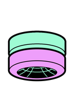
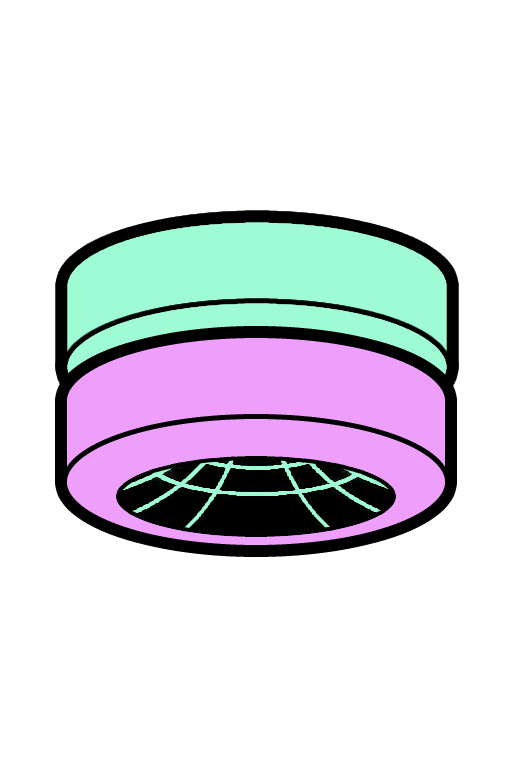

AudioHole · Three initial IDLE loops
UNAPPROVED · 12 authored frames per loop · 5.0 s · 100 ms timebase with exposure holds
These animated PNGs are review previews. Individual operating frames remain 512 × 768 RGBA PNGs.
Blink once per loop; compare native detail with the representative compact GUI size.
Frame-by-frame inspector · All 36 frames · Report
default
Compact 128 × 192 · autoplay, five-second loop
Native 512 × 768 animated preview
All 12 labeled frames
uwu
Compact 128 × 192 · autoplay, five-second loop
Native 512 × 768 animated preview
All 12 labeled frames
vanilla
Compact 128 × 192 · autoplay, five-second loop

Native 512 × 768 animated preview

All 12 labeled frames